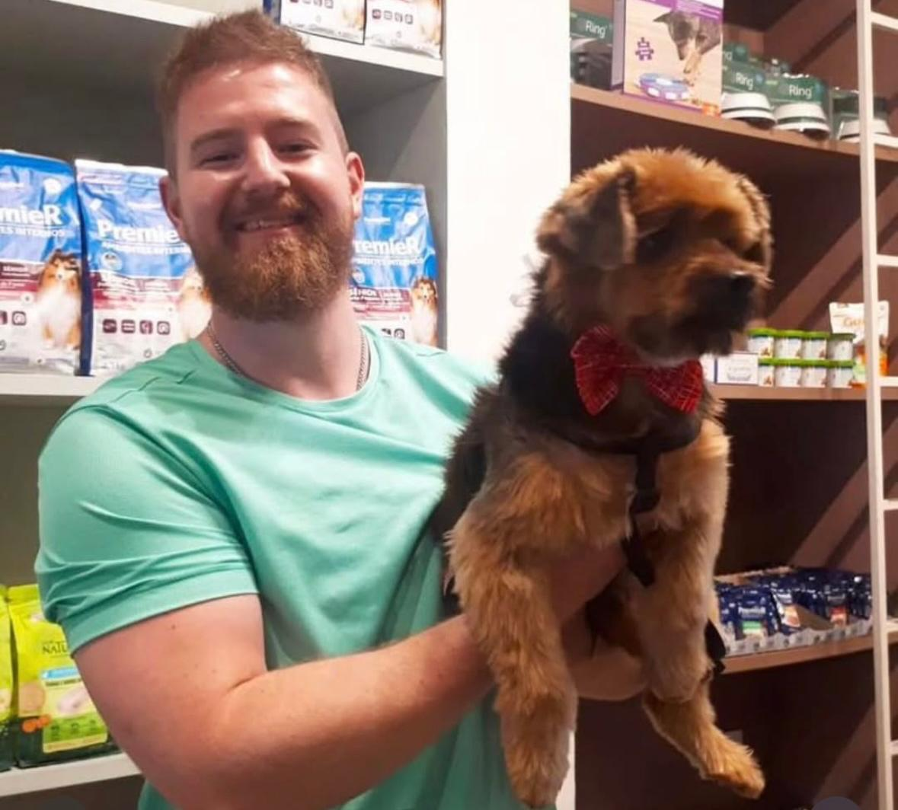
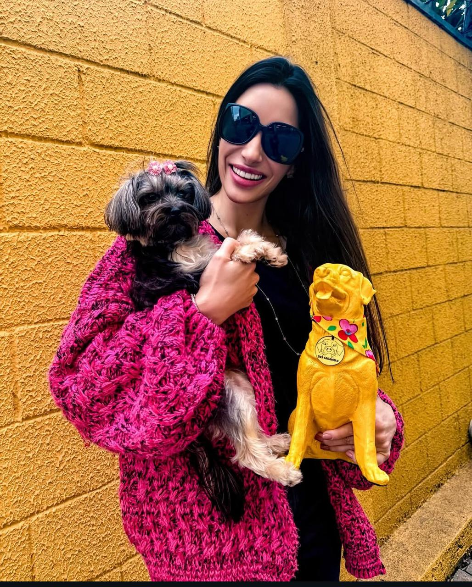
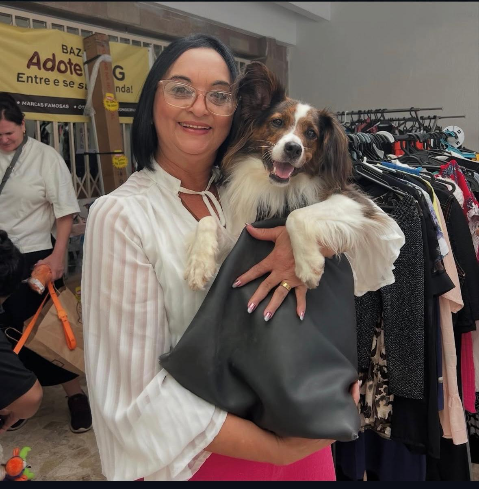

COMO FUNCIONA A ADOÇÃO?
Adotar é um gesto de amor que muda vidas.
Para facilitar esse momento tão especial, criamos um processo rápido, direto e totalmente guiado pela nossa equipe via WhatsApp.
Passo a passo da adoção
1. Explore o catálogo de pets
Veja todos os pets disponíveis para adoção com fotos, idade e descrição.
2. Clique no botão “Quero Adotar”
Você será direcionado automaticamente para o WhatsApp oficial da SOSCarameloSP.
3. Converse com nossa equipe
No WhatsApp, um voluntário vai te atender com carinho, tirar dúvidas e orientar todo o processo.
4. Agende uma visita
Marcamos um dia para que você conheça o pet pessoalmente.
5. Finalização da adoção
Se a conexão acontecer, concluímos a adoção e te explicamos os cuidados iniciais para receber seu novo amigo em casa.
Simples, rápido e cheio de carinho.
Nosso objetivo é que o processo seja leve e acolhedor,
sempre priorizando o bem-estar do pet e a sua segurança ao adotar.
CONFIRA ABAIXO ALGUNS DOS PETS QUE JÁ CONSEGUIRAM UM LAR

PAÇOCA

MEL

THIENA